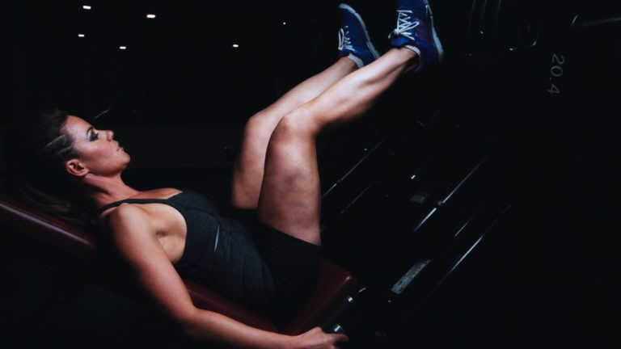
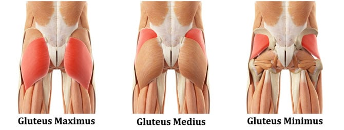
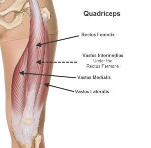
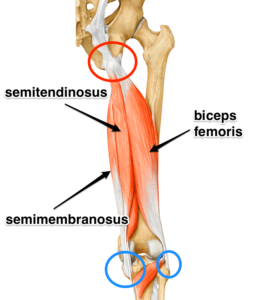
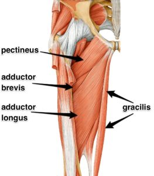
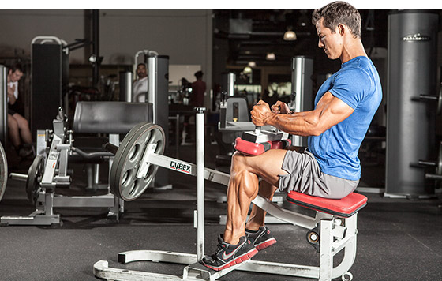
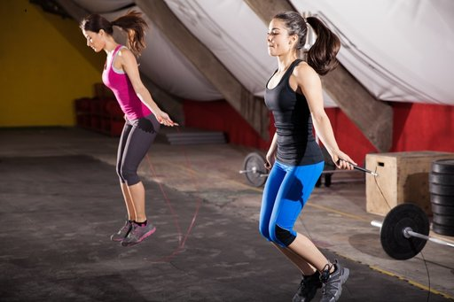

BACAK KASLARI İÇİN EN İYİ EGZERSİZLER
Bacak kasları çok önemli olmasına rağmen maalesef ihmal ediliyor.
Bu yazıda arka bacak hareketleri, kalf kası ve bacak kasları anatomisi dahil olmak üzere kapsamlı şekilde bir bacak antrenmanı sizi bekliyor.
Bacak güçlendirme sadece spor salonunda olmak zorunda değil, evde bacak antremanı videomuz ile bacak kasları geliştirebilirsiniz.
Vücut geliştirme yapıyorsanız vücut bir bütündür ve her parçasına önem vermeniz gerekir, yazımızda bacak kası çalışırken yapılan hatalardan, doğru yapılması gereken noktalarda ve en iyi bacak kası egzersizlerinden bahsedeceğiz.

Bacak Kasları için Tavsiyeler!
Antrenman sıklığını artırmak: Bacak kaslarımız büyük kas gruplarıdır, gelişimi uzun sürebilir ve emek ister.
Gerçekten üstüne düşer ve emek verirseniz emin olun istediğinizi alacaksınız.
Bunun için haftada 1 kez çalışıyorsanız bunu en az 2’ye çıkarmayı deneyin, işinize yarayacaktır.
Bir antrenmanda çok değil, birkaç antremanda azar azar daha iyidir!
Kuvvete odaklı çalışmayı ihmal etmeyin: Bacak kasları için sadece hipertrofiye yönelik değil, kuvvet çalışmalarını da mutlaka antrenmanlarınıza dahil edin. Squat gibi compound olan bir egzersizde kuvvetinizi arttırmaya çalışabilirsiniz.
Vücut ağırlığınızın en az 2 katı Squatı birkaç tekrar dahi yapmayı kendinize bir hedef belirleyin! 1-2 senede bu hedefi vurmanız lazım! Yok yoksa programınız yanlış demektir.
Farklı tekrar aralıkları ile antrenmanınızı düzenleyin: Bunu en iyi yapabileceğiniz hareket kesinlikle squat egzersizidir, haftada 2 kez squat çalışıyorsanız birinde 4×8-12 diğerinde 5×5 vb. gibi sistemler ile çalışarak bacak kaslarına hem kuvvete yönelik hem de hipertrofiye yönelik antrenmanlar uygulayabilirsiniz.
Sıçrama egzersizleri ile antrenmanınızı destekleyin: Bacak kasları için uyguladığınız antrenmanınızda sıçrama egzersizlerine yer vererek kasın bağlı olduğu tendonlarınızı güçlendirebilir, hem de compound egzersizler olduğundan dolayı fazladan efor kullanacağınız için yağ yakımına da katkı sağlayabilirsiniz.
En İyi Bacak Kası Hareketleri! (Bacak Anatomisi)
Bacak kaslarımızı iyi şekilde çalıştırmanın yolu biraz da anatomisini bilmekten geçiyor, bacak kaslarımızda nerede hangi kasların olduğunu bilirsek buna yönelik çalışıp eksiklerimize için çok daha iyi bir egzersiz seçimi yapabiliriz.
Şimdi biraz bacak kaslarının anatomisinden bahsedelim.
Bacak Kası ve Kalça Kası Anatomisi

- M.Gluteus Maximus
- M.Gluteus Medius

- M.Tensor Fascia Latae
- Quadriceps Femoris (Rectus Femoris, Vastus intermedius,Vastus Lateralis, Vastus medialis)
- M.Sartorius
- Adductor Muscle (Pectineus, Gracilis,Adductor Magnus, Adductor Brevis, Adductor Longus)

- Hamstring Muscle (Semitendinosus, Semimembranosus,Biceps Femoris)
- M.Gastronemius
- M.Soleus

Bacak Kasları için En İyi Egzersizler
- Barbell Squat: M.Gluteus Maximus, M.Quadriceps Femoris, Adductor Magnus, Hamstring Muscle, M.soleus
- Walking Lunge: M.Gluteus Maximus, M.Quadriceps Femoris, Adductor Magnus, Hamstring Muscle, M.Soleus
- Standing Leg Curl: Hamstring Muscle
- Front Squat: M.Quadriceps Femoris
- Leg Press: M.Quadriceps Femoris
- Dumbell Stiff Leg Deadlift: Hamstring Muscle
Kalf Kası (Calf) Egzersizleri
Kalf kaslarımızda genetiğin önemi çok büyüktür, bacak kaslarımızı bir şekilde geliştirebilirken calf kaslarımızı geliştirmek genetiğiniz kötü ise çok zor olmaktadır.
Özellikle bu sporu doğal yollardan yapan bir sporcu iseniz kalf genetiğiniz kötü ise başınız bela da olabilir.
Calf Video
Bacak kaslarınızın üst bölümünü yeterli seviyeye getirseniz dahi calf kaslarınız küçük kalabilir, belirttiğim gibi genetik faktör burada çok önem taşır fakat bu demek değildir ki calf kaslarımızı çalıştırmayacağız.
İstediğimiz boyutlara gelemese bile çalışmayı ihmal etmeyin, güçlendirmeye çalışın, sıkıcı ve zaman alıcı olduğunu düşünebilirsiniz ama yine de bu kas gruplarını da mutlaka çalışın.
Genetik faktörleri bir yana bırakırsak eğer nasıl bu kasları geliştirebiliriz, hangi egzersizleri uygulamalıyız onlardan bahsedelim.
Calf Video
Standing Calf Machine: M.Gastronemius
Standing calf raise hareketinde ayaklar dışa dönük ise M.Gastronemius un iç başı, ayaklar içe dönük ise M.Gastronemius un dış başı daha çok çalışır.
Seated Calf Raise: M.Soleus

Parmak Ucunda İp Atlamak: İp atlamak kalf kaslarınızı aktif şekilde çalıştıracaktır ve kardiyo için de çok etkili bir egzersizdir.

Kalf kasları için haftada en az 2 kez çalışılmasını öneriyorum ve 2 hareketten 3-4 set 10-15 tekrar arasında çalışılması yeterli olacaktır.